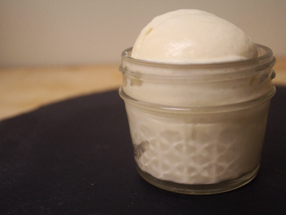

Cooking or cookery is the art of preparing food for consumption with the use of heat. Cooking techniques and ingredients vary widely across the world, reflecting unique environmental, economic, and cultural traditions and trends. The way that cooking takes place also depends on the skill and type of training an individual cook has. Cooking can also occur through chemical reactions without the presence of heat, most notably with Ceviche, a traditional South American dish where fish is cooked with the acids in lemon or lime juice. Sushi also uses a similar chemical reaction between fish and the acidic content of rice glazed with vinegar.
Preparing food with heat or fire is an activity unique to humans, and some scientists believe the advent of cooking played an important role in human evolution. Most anthropologists believe that cooking fires first developed around 250,000 years ago. The expansion of agriculture, commerce, trade and transportation between civilizations in different regions offered cooks many new ingredients.
Preparing food with heat or fire is an activity unique to humans, and some scientists believe the advent of cooking played an important role in human evolution. Most anthropologists believe that cooking fires first developed around 250,000 years ago. The expansion of agriculture, commerce, trade and transportation between civilizations in different regions offered cooks many new ingredients.